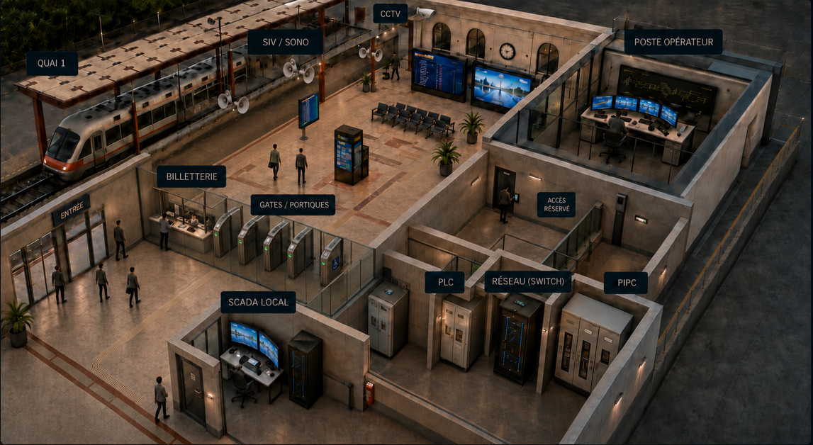

GARE
Détection
PLC
13:24:47
OPÉRATEUR
JUMEAU NUMÉRIQUE DE GARE · REPRÉSENTATION MÉTIER
Gare de Dakar
Exploitation normale
API Digital Twin
Connexion...
REPRÉSENTATION PHYSIQUE DE LA GARE
Quais · services voyageurs · vidéosurveillance · supervision OT
VUE OPÉRATIONNELLE
VUE RÉSEAU

SIGNALEMENT
Événement chargé
Le message d’événement s’affichera ici.
FRONTIÈRE IT → OT
SOURCE INCONNUE
Adresse non identifiée
INCOHÉRENCE SIV
RÉALITÉ
Rufisque
+3 min
≠
AFFICHÉ
Diamniadio
0 min
JOURNAL DES ÉVÉNEMENTS
Situation nominale
Tous les types
Découverte réseau
Communication non autorisée
Énergie traction
Signalisation
Information voyageurs
Télémétrie
Tous niveaux
Critique
Prioritaire
Activité
Information
Début
Fin
Réinitialiser